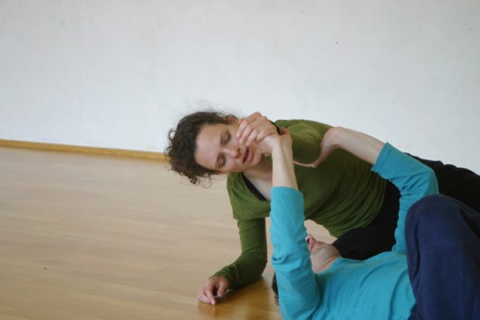

Somatisches Lernen

Somatisches Lernen (Somatic Education) ist ein ganzheitlicher Weg, über positive Körpererfahrungen zu lernen und Körper und Geist in Einklang zu bringen. Das Lern-Setting somatischer Methoden im Tanz lenkt die Aufmerksamkeit gezielt auf bestimmte Aspekte von Bewegung und Körperaufrichtung um das Körperbewusstsein und Bewegungsverhalten auszuweiten und zu verfeinern. Rollingpoint versteht Contact Improvisation und zeitgenössischen Tanz als Form somatischen Lernens. Bewegung und Berührung sind die Grundlage aller menschlichen Entwicklungsprozesse. Im deutschsprachigen Raum ist die Pionierarbeit von Elsa Gindler und Heinrich Jacoby während der Entstehung der Reformpädagogik in den 1920er Jahren hervorzuheben. Elsa Gindler bezeichnete ihre Arbeit schlicht als „Arbeit mit dem Körper“. Ein Textausschnitt aus einem ihrer Vorträge aus dem Jahr 1926 beschreibt auch aus heutiger Sicht immer noch sehr gut die Randbedingungen für somatisches Lernen. 1) Mabel Todd war in den USA Vorreiterin der Erforschung somatischer Lernprozesse. Das 1937 erschienene Buch „The Thinking Body“ ist die Grundlage der später unter dem Begriff „Ideokinese“ vor allem in der Tanzwelt weiter entwickelten Methode, durch bewusstes Wahrnehmen anatomischer Gegebenheiten, die Körperhaltung und das Bewegungsverhalten zu verbessern. Von eindrücklichen Persönlichkeiten wie F.M. Alexander, Moshe Feldenkrais, Gerda Alexander ("Eutonie"), Milton Trager, oder Bonnie Bainbridge Cohen ("Body Mind Centering") wurden verschiedenste Methoden somatischen Lernens entwickelt und verbreitet. Somatische Lernmethoden lenken in ihrem Lern-Setting die Aufmerksamkeit ganz gezielt auf bestimmte Aspekte von Bewegung und Körperhaltung um sie bewusst zu machen. Durch verbale Anleitungen, oft durch anatomische oder imaginative Vorstellungsbilder unterstützt und Berührung, können kleinste Veränderungen von Muskelanspannungen und andere kinästhetische Empfindungen wahrgenommen werden. 1)Gekürzter Textausschnitt aus einem Vortag von Elsa Gindler aus dem Jahr 1926: „Entspannung ist für uns ein Zustand der höchsten Reagierfähigkeit, eine Stllle in uns, eine Bereitwilligkeit auf jeden Reiz richtig zu antworten. Die Entspannung, die wir suchen, lässt sich leichtesten erreichen durch Empfindung der Schwerkraft. Die Schwerkraft müssen unsere Glieder begreifen und fühlen lernen, ja jede Zelle in uns muss wieder die Fähigkeit erwerben, ihr folgen zu können. Beim Stehen müssen wir fühlen wie wir unser Gewicht an die Erde abgeben und wie die Füße immer leichter werden. Es tritt das Paradoxon ein: Je schwerer wir werden, desto leichter, ruhiger werden wir. Als wesentlichstes muss man festhalten: Alles Korrigieren von außen hat wenig Wert. Es muss eines mit dem anderen so durchdacht, durchfühlt, mit den tausendfachen Vorkommnissen im Leben untrennbar verbunden werden, dass es zum Wesen des Menschen wird. Wie überhaupt auch jeder versuchen muss, das Verständnis für die besondere Art seiner Konstitution zu gewinnen, so dass er sich im weiten Maße selbst behandeln kann. Nun noch einige Worte über Spannung: Sie kommt scheinbar schlecht weg in unserer Arbeit, aber ich muss sagen nur scheinbar! In Wahrheit ist es so, dass nur, wer wirklich entspannen kann, auch Spannung haben kann. Darunter verstehen wir den schönen Wechsel der Energien, der auf jeden Reiz reagiert, der zunehmen, abnehmen kann nach der Beanspruchung. Wir verstehen darunter vor allem, jenes starke Gefühl der Kraft, der Mühelosigkeit einer Leistung, kurz ein gesteigertes Lustgefühl. Spannung wie wir sie verstehen, ist die Möglichkeit, die größten Widerstände mit einer gesteigerten Atmung zu überwinden. Spannung ist für uns der Gegensatz zu Krampf. Ausarbeiten wollen wir uns gern, aber nicht verarbeiten. (Textquelle: Die Gymnastik der Berufsmenschen, Elsa Gindler 1926) |